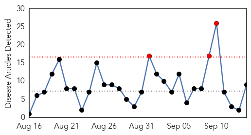

30 Day Trends
Web: 3 alerts, 0 warnings
Twitter: 4 alerts, 0 warnings
Top Articles:
- 0.999
- Here are 5 bogus excuses people use to avoid getting their flu vaccine
- 0.971
- Flu season around corner
- 0.962
- Flu-monitoring program seeks B.C. health practitioners to evaluate illnesses
- 0.917
- Hospitals not prepared to deal with flu pandemic
- 0.859
- B.C. calling on doctors to track flu in bid to prevent vaccine mismatch
- 0.803
- Latest News from India,Politics,Bollywood,Business,Sport
- 0.788
- When you’re too sick to work
- 0.784
- WVPAC 2015: Countries Worldwide Share Experiences of Avian Influenza
- 0.658
- Microbiologists Find Another 30,000 Year Old Giant Virus in Siberian Permafrost
Top Tweets:
-
No tweets found for Sep 14, 2015
Web/News Articles
Tweets

Article Locations